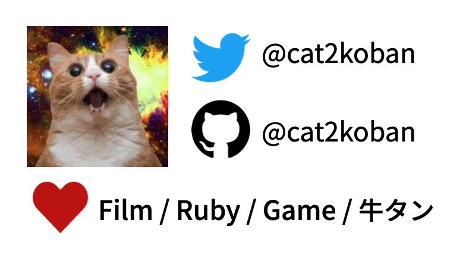

Links
Current Job
- Backend Engineer at Moneyforward
- Main: Web backend
- Sub: Infrastructure
Educations
- University of the Ryukyus
- Master’s graduation(2020/03)
Programming Experiences and Skills
- Kotlin(2023 - present)
- Beginner.
- Develop a graphql server applicatoin using Armeria.
- Ruby(2019 - present)
- A most writable language.
- Develop a web application using Rails 5,6,7.
- Perl, C, Shell Script, Go, JavaScript, TypeScript
- Tutorial level or tutorial + alpha level.
Local Development Environment
- current main editor - IntelliJ IDEA UE
- previous main editor - Tmux + Neovim + zsh (dotfiles)
Certificates
OSS Contributions in GitHub
Hobby
- Watching Films
- Reading Mangas
- Play Game
- League of Legends (2014 - present)
Last Update: Jul 2024